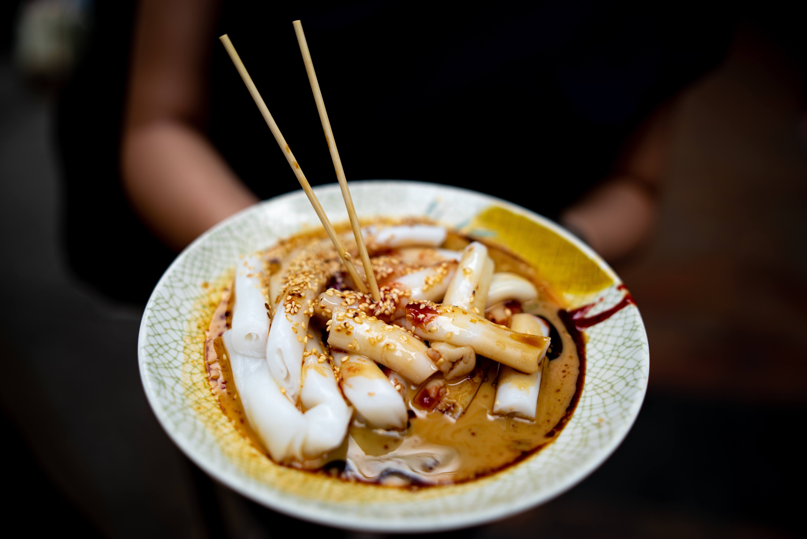
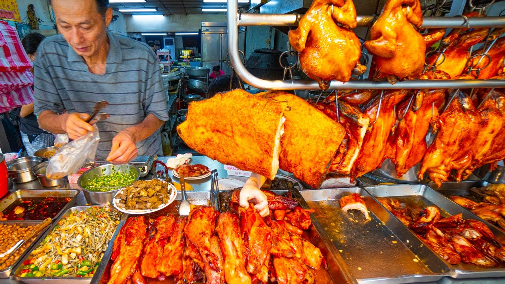
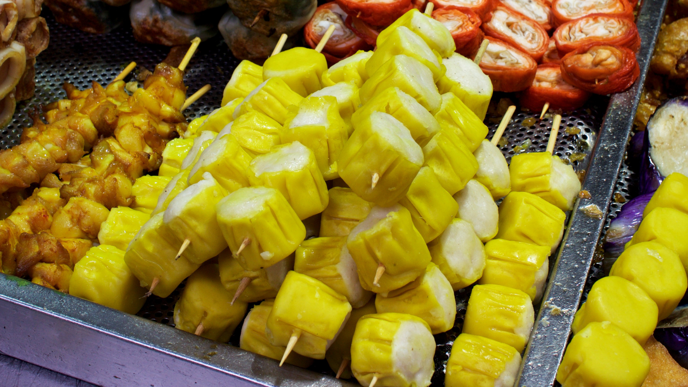
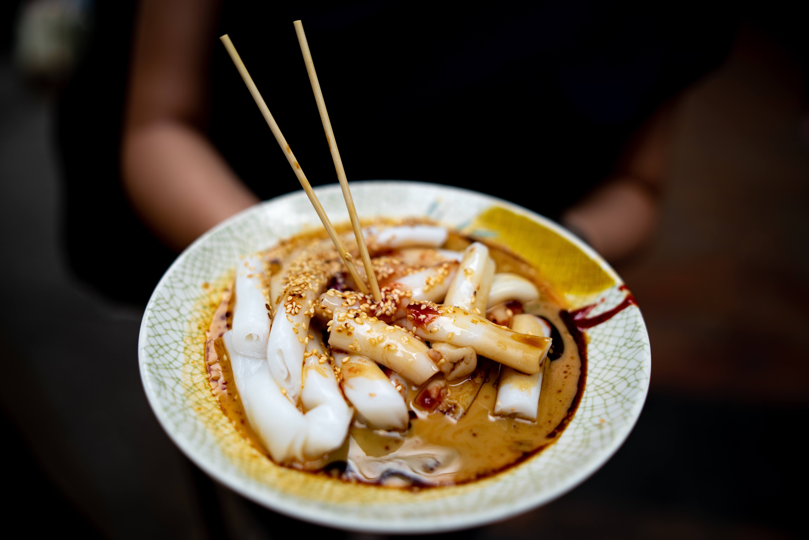
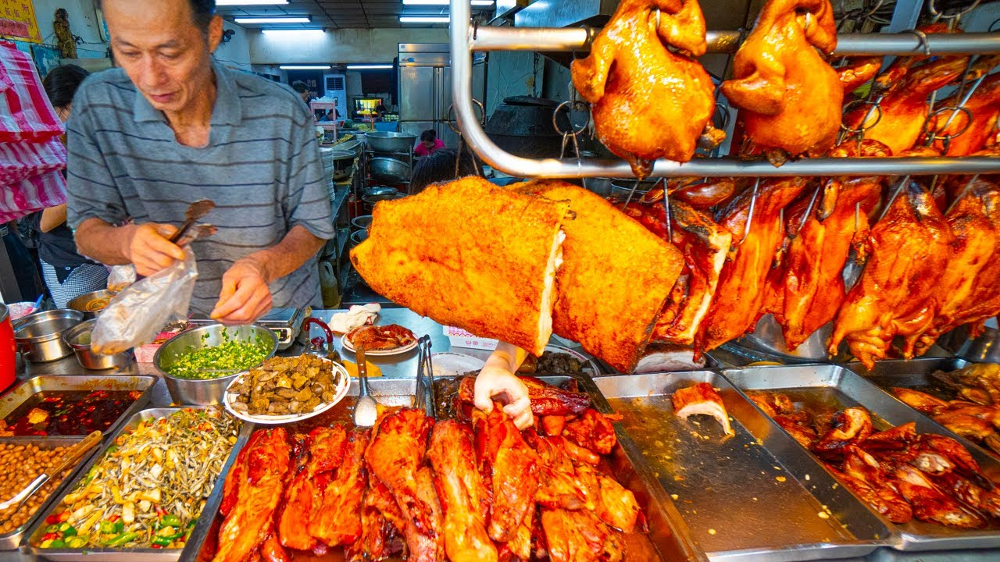
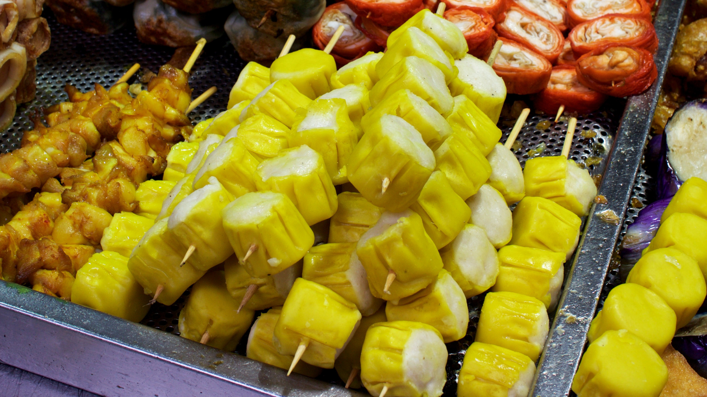
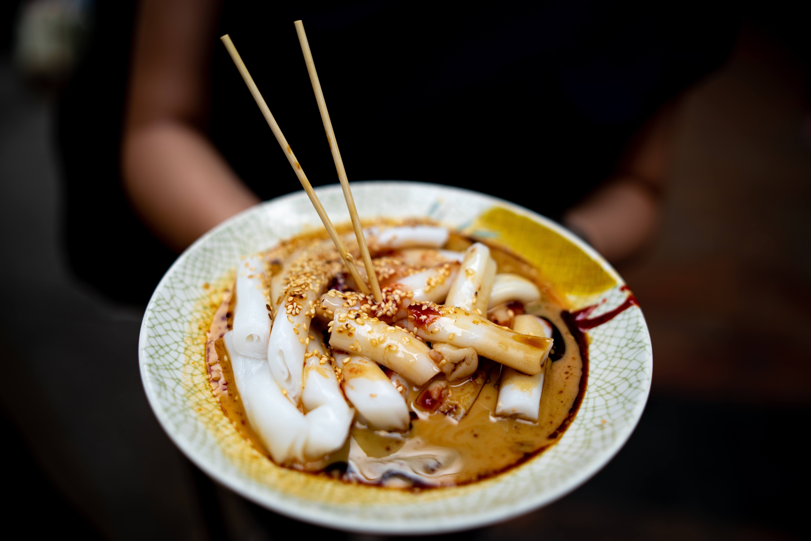
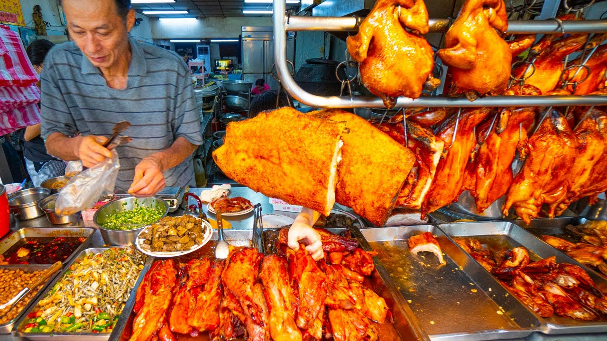
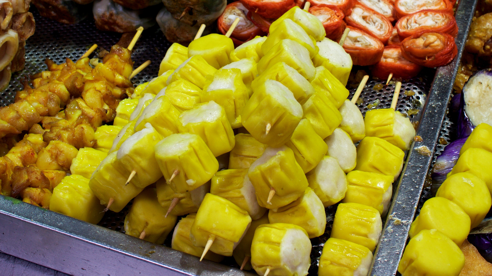

This Webpage is about the city in China named Hong Kong, also the city I was born and riased. the people in this city uses a dialect named Cantonese. I love everything in this city including the food, culture, history, and everything else there is. Back in the 70s to 80s, Hong Kong was leading technology and stocks in the world, this also makes the land in Hong Kong extremely expensive, and to survive in this city you had to give all you got, or you'd be sleeping in the streets, this means things like food, stores are really competetive, which also means the food is really good.👍


